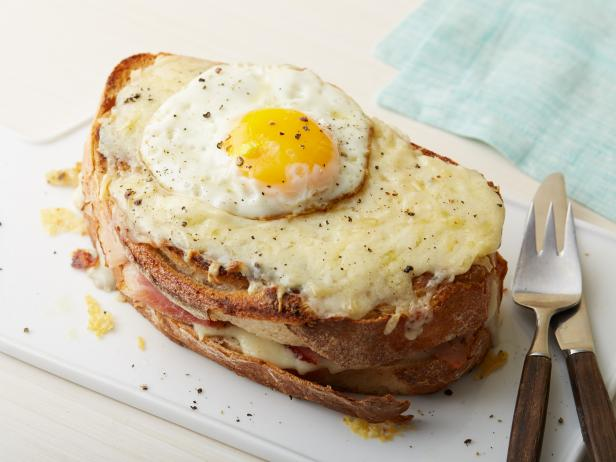

Yummy Croque Madame

How Nastya Cooks It
Simple and elegant Croque Madame made with ham, gruyere, parmesan cheese, a layer of
béchamel sauce, and topped with a fried egg.
It's the most sophisticated ham and cheese sandwich around.
Ingredients
For the Béchamel sauce
- ¼ cup unsalted butter (½ of a stick)
- ¼ cup all-purpose flour
- 1½ cups whole milk
- salt and freshly ground black pepper
- ¼ teaspoon dijon mustard
- dash of ground nutmeg
For the Sandwiches
- 8 thin slices white sandwich bread
- 5 ounces good quality ham, about 8 slices
- 6 ounces Gruyere cheese, or Emmental cheese, grated
(about 2½ cups)
- 1/4 cup freshly grated parmesan cheese
- 4 eggs
Steps
Make Béchamel sauce
-
Melt butter in a medium saucepan over medium heat. Whisk in flour and cook, stirring constantly,
for about 3 minutes.
Gradually add milk, stirring well until the mixture is smooth. Cook, stirring, until sauce is
slightly thickened.
Season with a little bit of salt and pepper.
- Remove from heat and whisk in mustard and nutmeg. Set aside while you make the sandwiches.
Sauce can be made up to 1 week in advance, stored in the refrigerator.
Assemble sandwiches
- Preheat oven to 220 C. Line a baking tray with parchment paper and set aside.
- Spread each bread slice with a thin layer of béchamel, spreading it all the way to the edges.
Place 4 slices of bread, béchamel side up, on prepared baking sheet.
- Top bread with a piece of ham and a sprinkle of freshly grated gruyere and parmesan cheese.
Top with another bread slice, béchamel side up, then sprinkle with remaining gruyere and
parmesan cheese.
- Bake for 5-6 minutes, until cheese is melted, then turn the oven to broil and toast until the cheese
on top is lightly golden, 2-4 minutes.
- While sandwiches bake, heat a large skillet over medium-high heat. Grease the pan with butter or
non-stick cooking spray and crack eggs into hot pan (you may need to do this in batches,
depending on size of skillet). Reduce heat to medium and cook for several minutes, until desired
doneness. Place an egg on top of each hot sandwich.
Go back to all recipes